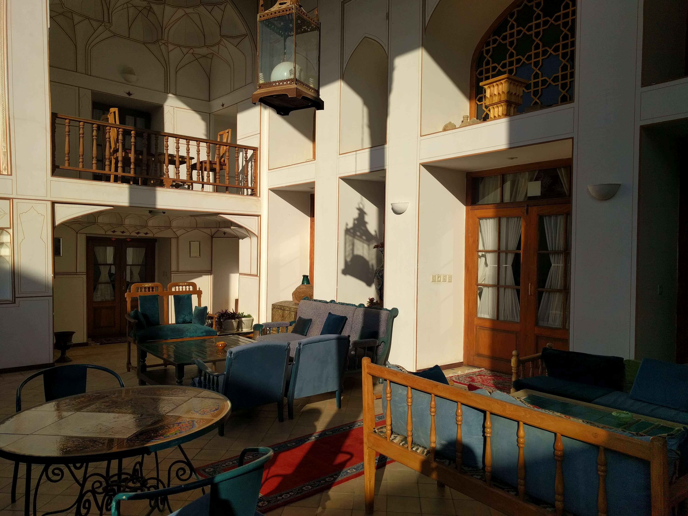
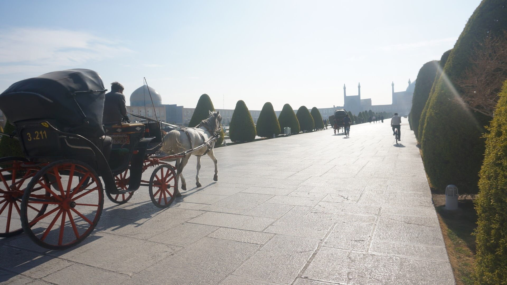
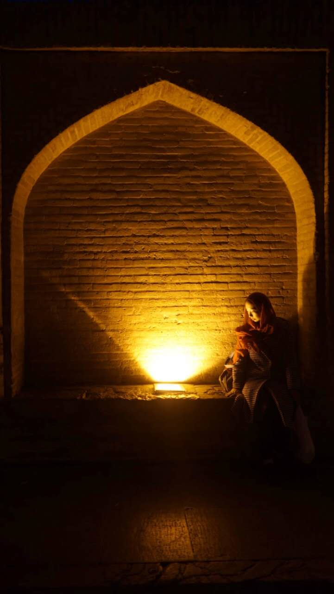

从德黑兰到伊斯法罕的交通方式是乘坐大巴，实际距离三百多公里，但大巴开得实在有些慢，最终我们花费了八个多小时在车上，早晨沐着晨光出门，天际擦黑才来到伊斯法罕。
我们在伊斯法罕住的酒店很值得一说。据说是有好几百年历史的波斯富商的豪宅，拥有开阔的拱形前庭，繁复华丽几何图形凹凸有致，描金的纹饰也带着神秘的美感，前庭正对着带有水池的小花园，可惜冬季池水不丰，不然池水映照着庭柱又多了一分景致。

庭中花木扶疏，墙角嫩粉色的干旱地区特有的多肉植物也是拙稚可爱。一层和二层分隔成了多个现代化的卧室，我预定的是地下室，整个一层均是我们的房间，是旧时生活痕迹保存最为完好的一间，甚至连门窗也不是密封的。有好几个极具特色的桌椅箱子，大瓷瓶，墙面粗糙的土制砖也让我们如获至宝。
清晨光线从气窗洒下来，唤醒了我们。早晨和傍晚庭院的光线特别美，从庭中可以推开大门直接进入餐厅。西式的长条形的餐桌上已经摆好了餐具，贴心的小姐姐甚至为我们点燃了壁炉。这是我第一次看见真正的壁炉，十分好奇，几乎要把头伸进去了。
伊斯法罕位于伊朗腹地，沟通南北，在里海至波斯湾最近的直线中部，自古是兵家必争之地，在阿契美尼德、萨珊王朝时期就已经具有重要地位，波斯进入伊斯兰时期后开始繁华，后毁于蒙古帖木儿的铁蹄下，在16世纪再次开始繁荣，并在一百年后再次成为王国都城。当年有句谚语“伊斯法罕半天下”，不难看出伊斯法罕在伊朗人民心里的地位，可以想象他们向外国人说出这句话时心中的得意与自豪。
现在看来，却难免有些寥落。早晨的街道十分干净，行人稀少，旧城区多是拆了一半的土坯房，甚至很多临街的小楼也没有人居住。城中并没有高层建筑，商铺也难得看到几个。
我们不紧不慢的沿着旧街道走到了伊玛目霍梅尼广场，倒是眼前一亮。几乎所有的景点，必去的清真寺都分布在广场四周。广场整洁明亮，十分气派，据说是世界第二大广场。巴扎、广场、清真寺是很常见的组合，广场集宗教和商业和休闲的功能于一身，人们生活方式围绕着广场展开。广场上三三两两是出来散步的当地人，携妻带子，在草坪上野餐，很是闲适。

在各个清真寺拍完照转悠完打完卡，我们就打算去解决口腹大欲了。餐厅是很奇怪的一件事，除了在游客众多的核心景点旁，哪怕是市中心的大街上也很难找到好一点的用餐地点，似乎人们很少在外面就餐，我们有一次走遍好几条街，不得不进入一个只有两张桌子的烤肉店，当我们入座点单之后，店里莫名多了很多客人，没有女性，不过入乡随俗我们也已经习惯被围观了。
广场附近，一共有两家餐厅很值得一提。
Bastani，在TripAdvisor上被众人推荐，就在广场边。餐厅的装饰很有特色，奢华繁复，可以选择在庭院的榻上盘腿就餐，也可以在大厅里享受音乐。对于我们当然是坐榻了。榻上没有桌，只用餐布铺开，盘碟均放在餐布上，吃饭若是不捧着盘子，就得屈着腰背了。餐厅的食物很美味，价格也很亲切，四个胃口不大的女孩子吃了20刀的东西，就十分满足了，最后的小插曲是我们询问能否用美金结账的时候，收银的老先生“随口”说，可以，折合美金50刀，数字轻轻在心中过了一遍便觉得不对，向他指出来时，他有些狡黠的做了嘘的手势说“Yes，Yes，20 Dollars ”。这种坦然坑钱的状态让我们都有些费解，却又看不出他有不好意思或者恼羞成怒，只好付账走人了。
Maiek Soitar Jarchi，是我们去的第二家Fine Dining。过去是一间使用了十几年的土耳其浴室，后来改造成了餐厅，厅中还保留着一个一个的水池，桌子架在水池之间，装饰则是加了很多镜面和灯光，一时觉得有些晃眼。在伊朗的文化里，似乎水池一种很受欢迎的装饰，叫我猜想可能是水资源宝贵，所以水池更能彰显主人的财力吧。
待我们坐上桌，似乎此时还没到饭点，没有多少人，侍应为我们打开了音乐，并插了一面小小的五星红旗在我们的桌上。我们点了嫩嫩的小羊羔腿，烤肉，藏红花米饭，dizzy，以及一壶红茶。除了烤肉里的烤西红柿以外没有别的蔬菜，此时四人均有些上火，吃完饭开始喝茶聊天，不知续过几次茶水，仍觉得有些不足。
从Jarchi餐厅出来，是一片老城区的巷子，有很多传统风貌的建筑，包括分男女的门环，似乎是从性征上来暗示，男客的门环是沉重的竖状，敲起来沉重有声，女客的门环是环状，略轻一些，主人能从门环中听出来者的性别，从而决定是女主人迎接还是男主人迎接。
这一夜正是跨年，2017年即将来到，旧岁一切成为往事，但是从2016年的上火一直带到了新年。突然想到我在箱子里塞了好几包脱水的菠菜鸡蛋汤，于是向厨房借来了餐具，热水，每人一碗菠菜鸡蛋汤，此刻没有人注意到由于时差的关系，国内是不是已经开始跨年，大家沉浸在有汤喝的美好享受中，难以分神。
第二天去了亚美尼亚区。亚美尼亚人遭遇种族灭绝的威胁时，是伊朗人接纳了他们，亚美尼亚人信仰基督，而他们的教堂也神奇的在伊斯兰国家内建立了起来，这也反映出伊朗文化包容温和的一面。亚美尼亚区似乎更富裕一些，独栋的二层小楼，门前中产阶级的轿车以及现代化的车库。然而由于新年的关系，我们没有进入到教堂内部参观，实在是有些遗憾了。
伊斯法罕最美的、最重要的一景非三十三孔桥莫属了。桥分上下两层，均为连绵的拱形桥洞，下面一层的拱直径比上面的要大一倍左右，虽然冬季枯水，无法看见传说中桥洞倒映在水中的画面，但开灯后，温暖饱满的灯光打在每一个拱形的桥洞里，仿佛一千零一夜里的梦境。入夜，桥上的的行人也渐渐多起来，大多是本地人，在桥上散步，闲谈，还有控制不住内心骚动的小青年们在桥下聚集，偷偷分享一些音乐，追逐打闹。

灯下实在是适合看美人，控制不住给友人拍了好几张照片。虽我技巧不足，但也能窥见一些那时的灯影。